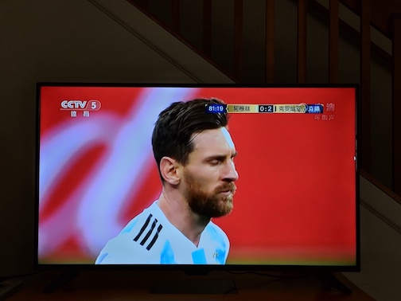

2018年6月。上一期是5月刊。
世界杯
话说欧冠决赛那天，我们去酒吧看了球。看球看得兴起，就去为了世界杯专门买了一个电视😂。没有买 cable，我们买了 Transocks 翻回国内，又买了央视的会员，大部分时间都够用了。我们还试过 Potplayer 的高清源，也就高清了一个下午然后再也加载不出来了。。

今年似乎突然多出不少说世界杯是假球的声音，高晓松老师4年前说假球的节目又被翻了出来。我还看过大紧老师的《鱼羊野史》呢，当时没有注意，他确实在第3本、第4本里都说到了：
在一些万众瞩目的世界级的比赛里，比赛结果很容易被赌博操控，足球也是，有时候在世界杯里突然看到一支世界级的一流强队居然以大比分输给了很弱的队伍，但是如果一看盘口，就明白为什么了。所以我就有了这样一个猜测，就是当时在比赛开始前，赌泰森赢的人多，因为霍利菲尔德当时已经四十一岁了，而泰森正如日中天。赔率再悬殊，泰森赢的可能性也是非常大的。就像中国队去参加世界杯，即使中国的赔率是一万倍，也没人下注中国队能赢世界杯冠军；就算阿根廷的赔率是3，人们也会下阿根廷队的注，因为他们很有可能赢。所以当特别多的钱向一边下的时候，你说泰森他能赢吗？当然不能。如果他赢了，那把他捧起来的这些幕后的大老板就都该破产了。这种情况在其他的体育项目里也是很常见的，尤其是足球明星长期在这个体系里玩，已经很习惯了。每年欧洲联赛都有10%—20%的假球，而且在欧洲踢职业联赛的足球明星素质大都比较高，能把假球玩得比较好，让外行人看起来天衣无缝。等比赛完你再一看盘口，才会恍然大悟。
当时看到的时候没有注意，一扫而过，现在再看这样的外行观点，简直哭笑不得😂😂😂。小联赛或许有假球，但博彩公司既然可以稳稳当当地抽水净赚，那为什么要在世界杯这样一旦曝光就声誉扫地关门大吉的场合安排打假球呢，又到底需要多少钱才能买通所有所有的球星和工作人员而不透露一点点相关信息呢。阴谋论可以解释世界，但是它除了这个虚幻的聊以自慰的解释之外，屁用没有。
有了电视之后
有了电视之后就能在每周日追看《西部世界2》的更新了！AT&T 给了个 DIRECTV NOW 的福利能看。有人说德妹和 Bernard 像是 GAN，我想了想，好有道理！！另外剧中说他们是根据游客的 behavior 来 train，要求完全符合，那肯定会 overfit 的嘛。
也用小电视玩了《模拟人生4》。捏了小人，想等着老死了之后就去睡，结果小人练满了健身抱负后获得了长寿天赋，然后好像怎么都死不了了。。。。
也用小电视看了《非自然死亡》，石原里美的新剧。我觉得很棒！！去年有一段时间在吃饭的时候会看日剧或者看烂片，就是为了减压。😓
在去看《超人总动员2》之前，我们在电视上重温了的第一部。小时候看过1，一些场景还有印象，想不到一晃14年过去了，1、2剧情无缝连接。我很喜欢这第二部，惊喜惊喜！各种超能力的奇思妙想确实特别适合通过动画电影来呈现。这样一想，剧情薄弱的大问题也就可以忽略了。我发现只要一部电影有能打动我的点，我就乐意给5星评价，但是在 IMDb 上，只有那些我觉得非常棒非常喜欢的电影才会给9分、10分。这么想来，5分制和10分制的评分标准真的是差别很大了。
重返 Podcast
6月在《故事FM》上听了《我在朝鲜上大学》系列节目（E081-085），非常有意思！也借此机会趁着 Google Podcasts 的发布重新入了 podcast 的坑。说重新是因为4、5年前我一直有听 Scientific American 60s Science 的系列节目练英语听力，曾经写过一个相关的知乎回答，但是后来就不跟了。这次重新拾起才发现，几年间随着移动设备的发展，各种 podcast 已经层出不穷了！于是我又跟着整理了一下。
故事FM就是我觉得非常值得听的一个 podcast，对我之前的信息摄入源是个很有效的补充。目前觉得还不错的还有《疯投圈》，剩下还有几个都还没有试听完毕，或许下几个月可以统一整理推荐。
惊喜
Spectacle。在推荐窗口管理器时，我发现了 Spectacle 这个 app。我自己是用 Slate 来做 mac 上的窗口管理的，不过 Slate 需要自己写配置文件，而 Spectacle 亲民得多，直接设置就行，非常适合推荐。
Subaru Factory Tour。我之前都不知道，原来还可以去斯巴鲁在村里的工厂参观！欣赏造车的流水线。
Wolf Park。我之前都不知道，原来在村里还有一个养着狼的公园，最早是设立来做动物行为学研究的。现在可以去看狼卖萌。。。。